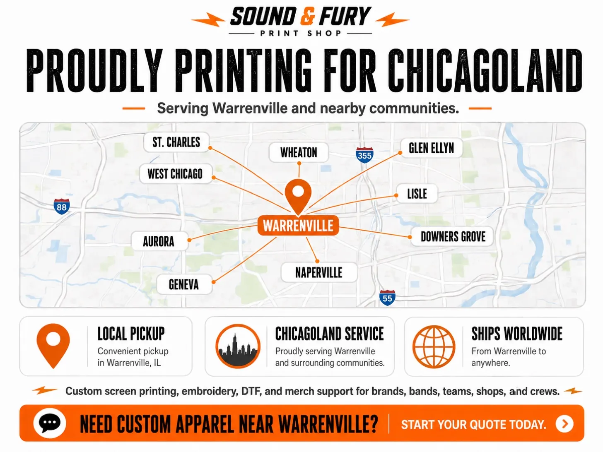

Custom T-Shirts Near You: Screen Printing for the Western Suburbs

Sound & Fury Print Shop is a local screen printing and custom apparel shop at 28W321 Warrenville Rd #7, Warrenville, IL. We serve Naperville, Wheaton, Aurora, West Chicago, Glen Ellyn, Lisle, Carol Stream, Winfield and the wider Chicagoland area, with local pickup in Warrenville and shipping worldwide. No order minimums. Call 630.791.8099 or get a quote.
When you search "custom t-shirts near me" in the western suburbs, you get a wall of national online portals that ship from who-knows-where and answer the phone never. We're the opposite of that. Sound & Fury is a real, independent print shop in Warrenville that's been printing for Chicagoland for over a decade, and there's an actual human here who'll pick up the phone.
Where We Are, Who We Serve
Our shop sits in Warrenville, right in the heart of DuPage County, which puts us a short drive from most of the western suburbs. We regularly print for customers in:
- Naperville, Wheaton, and Aurora
- West Chicago, Glen Ellyn, and Lisle
- Carol Stream, Winfield, Bartlett, and Batavia
- and the rest of Chicagoland, plus customers nationwide via shipping
Local customers can pick up right in Warrenville to skip shipping entirely, or we'll ship your order wherever it needs to go.
What Local Apparel Printing Actually Gets You
Going local isn't just a feel-good choice. It changes the result:
- You see a proof before we print. No surprises on the finished product.
- A real person answers. Questions about sizing, art, or timing get a straight answer, fast.
- Pickup is on the table. Need it in hand quickly? Grab it in Warrenville.
- You support a local business instead of a faceless portal. (More on that in why local beats an online service.)
Who We Print For Around Here
Over the years we've printed for just about every kind of group in the suburbs: youth and rec sports teams and leagues, schools and spirit wear, small businesses and corporate apparel, churches and nonprofits, events and fundraisers, and bands and brands launching their first run of merch. From a single shirt to a few thousand, with no order minimums.
What We Do
Everything apparel and then some: screen printing, embroidery, DTF and small full-color runs, signage and decals, and online merch stores for teams and businesses that want everyone to order and pay on their own. Not sure which print method fits your job? Start with our method comparison guide.
Three Ways to Start, From Anywhere in the Suburbs
- Know what you want? Place an instant order online, 24/7.
- Want real numbers first? Start a quote in 60 seconds and we'll send a custom price back fast.
- Need art? Browse ideas in our Design Lab and our artists customize it.
Or just stop by: 28W321 Warrenville Rd #7, Warrenville, IL 60555. Find us on the contact page.
Need Custom Shirts in the Suburbs?
Local pickup in Warrenville or shipped to your door. No minimums. Let's make it loud.
Get a Quote